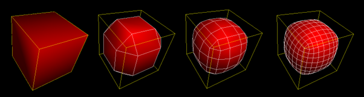

Applying Subdivision Within Graphics Pipelines
Project Aim & Objectives
‘Investigate into the potential use of shader systems to create an adaptive subdivision / tessellation system.’
- Identify system requirements for subdivision and tessellation.
- Explore potential shader systems within graphics application programming interface (API) that can handle the requirements.
- Develop a prototype shader system that incorporates a basic subdivision and/or tessellation scheme.
- Conduct testing on the viability of the system developed using generalised performance metrics.
- Evaluate the outcome of the system and comment on whether further research can be performed.
- Evaluate the viability of incorporating the subdivision/tessellation systems into the shader pipeline compared to current methods.
Graphics API Choice
The graphics API being used in this project is the Vulkan API due to its lower CPU overhead in comparison to the DirectX API. This helps the optimisation in this paper to be pushed further. Furthermore, the Vulkan API allows for much more developer control and flexibility as it is a lower-level API that can allow developers to optimise for different hardware specifications. However, this research should also function on the DirectX API as it focuses on using shader systems to create the subdivision and tessellation.
Using Vulkan's Geometry Shader
The first attempted implementation of a subdivision scheme was in the geometry shader system. This shader system was used due to its simplicity regarding accessing the vertices and triangle faces in a model. Furthermore, it is quite simple to emit new vertices from this shader to add to the viewport, such as the vertices that are created within subdivision schemes.
Vulkan's Geometry Shader Results
Using Vulkan's Tessellation Shaders
The tessellation shader system in Vulkan is split into three sections: a user programmable control shader, a fixed function tessellation primitive generator, and a user programmable evaluation shader. This process generally involves subdividing patches and computing the data required for each of the new vertices generated (location, colour, texture coordinates, etc.).
Tessellation Control Shader
The tessellation control shader controls how much tessellation each particular patch gets; it defines the size of the patch allowing the modification of the data within it. It also has the ability to filter vertex data received from the vertex shader. The main purpose is to feed the tessellation levels to the primitive generator stage and to feed the patch data to the tessellation evaluation shader.
Tessellation Evaulation Shader
The tessellation evaluation shader generates new vertices for the patches it is given using the information generated by the tessellation control shader and the tessellation primitive generator. The setup code for the evaluation shader is shown in Code Piece 9. The code shows the input patch structure and the UBO that contains the required data. The inputs for the evaluation shader in this case are an abstract patch of primitives, in this case triangles, that have come from the Tessellation Primitive Generator, along with the normal, texture coordinates and patch vertices. It then outputs the new vertex normal and texture coordinates.
Final Results and Conclusions
The original aim of the project was to ‘Investigate into the potential use of shader systems to create an adaptive subdivision / tessellation system.’ This has not been met as a full subdivision scheme has not been implemented into a shader system however, this project shows the potential of this idea whilst still conforming to the correct software design standards. The application shows promise in the extended use of tessellation shaders to create a system that uses hardware tessellation acceleration to modify meshes in a variety of ways.
|
|
Lowest FPS Values with Wireframe Active: |
Lowest FPS Values with Wireframe Inactive: |
|
1.0 Tessellation Level |
4000 fps |
4500 fps |
|
3.0 Tessellation Level |
3400 fps |
4400 fps |
|
5.0 Tessellation Level |
2300 fps |
4000 fps |
|
10.0 Tessellation Level |
850 fps |
2750 fps |